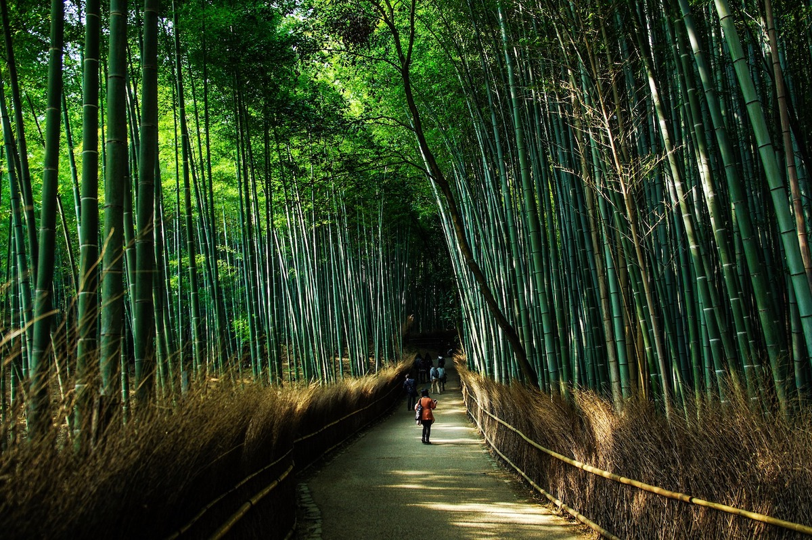

必遊景點

竹林之道
提到嵐山，相信許多人第一時間都會想起一大片竹林吧！走進這竹林小徑，竹香撲鼻而來，悠閒漫步在其中，彷彿置身於別的世界。

野宮神社
野宮神社以祈求姻緣和學業最為有名，也是嵐山裡香火最鼎盛的神社之一。野宮神社正門口的黑色鳥居，據說是保留了日本鳥居最古老的模樣，也是全日本少數的黑色鳥居喲！在日本著名文學《源氏物語》當中也有被詳細描述，因此有機會來到嵐山一定要來朝聖喔！

天龍寺
天龍寺不只是世界遺產，更被稱作是京都五山之首。天龍寺佔地廣大，需花時間慢慢走完，一邊欣賞建築物和日式庭院的景色，一邊細細探究當時幕府時代的歷史。

保津川遊船
保津川源頭來自京都中部地區丹波高地，繞過群山奔流至龜岡，穿越九曲十三灣的峽谷來到嵐山與桂川匯合。峽谷裡的風景四季各有千秋，詩情如畫的景色都教人流連忘返。搭船期間，時而平靜，時而湍急激起浪花，保證一點也不無聊。